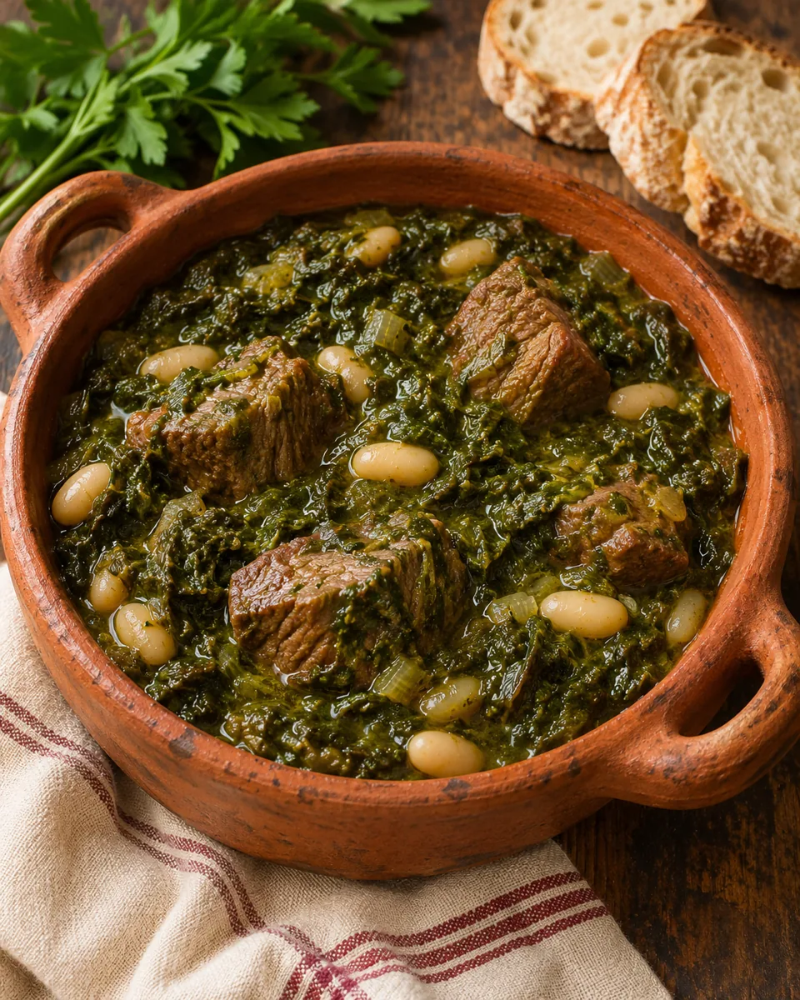
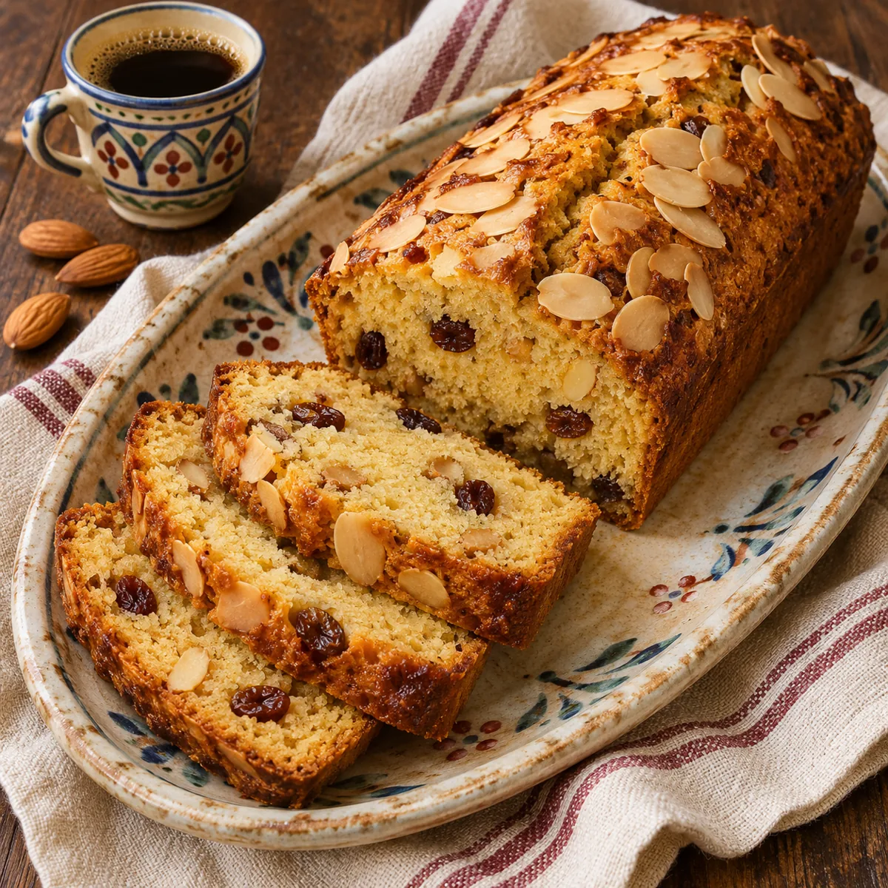
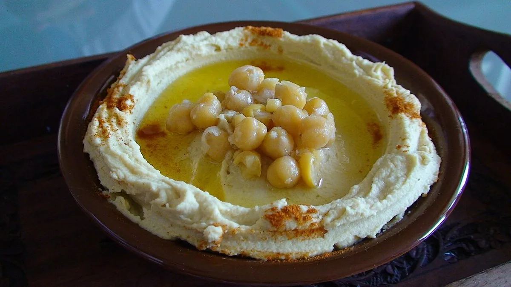
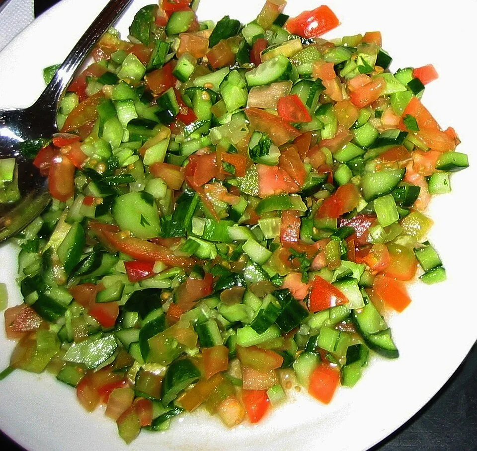

פקיילה
תבשיל תרד כהה עם שעועית לבנה ובשר בקר.
למתכון המטבח שלנו
מתכונים מהמטבח היהודי תוניסאי
המטבח שלנו
מתכונים מהמטבח היהודי תוניסאי
שישה מתכונים ביתיים עם מצרכים וזמני הכנה.

תבשיל תרד כהה עם שעועית לבנה ובשר בקר.
למתכון
קוסקוס עם מרק ירקות, חומוס ובשר בקר.
למתכוןעלה דק ממולא בתפוח אדמה, טונה וביצה.
למתכון
עוגה יבשה עם שקדים, צימוקים ותפוז.
למתכון
ממרח חומוס פשוט עם טחינה ולימון.
למתכון
עגבניות, מלפפונים, בצל ופטרוזיליה קצוצים דק.
למתכון| מנה | סוג | זמן הכנה | כמות |
|---|---|---|---|
| פקיילה | תבשילים | 3 שעות | 6 מנות |
| קוסקוס של שבת | תבשילים | שעה וחצי | 6 מנות |
| בריק פריך | מאפים | 30 דקות | 4 יחידות |
| בולו ליד הקפה | משהו מתוק | שעה | 2 כיכרות |
| חומוס ביתי | לצד הסיר | 15 דקות | 4 מנות |
| סלט קצוץ | לצד הסיר | 15 דקות | 4 מנות |
תבשילים
תבשיל תרד כהה עם שעועית לבנה ובשר בקר.
3 שעות | 6 מנות
תבשילים
קוסקוס עם מרק ירקות, חומוס ובשר בקר.
שעה וחצי | 6 מנות
מאפים
עלה דק ממולא בתפוח אדמה, טונה וביצה.
30 דקות | 4 יחידות
משהו מתוק
עוגה יבשה עם שקדים, צימוקים ותפוז.
שעה | 2 כיכרות
לצד הסיר
ממרח חומוס פשוט עם טחינה ולימון.
15 דקות | 4 מנות
לצד הסיר
עגבניות, מלפפונים, בצל ופטרוזיליה קצוצים דק.
15 דקות | 4 מנות